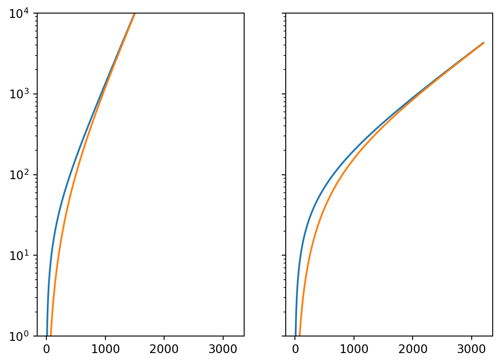
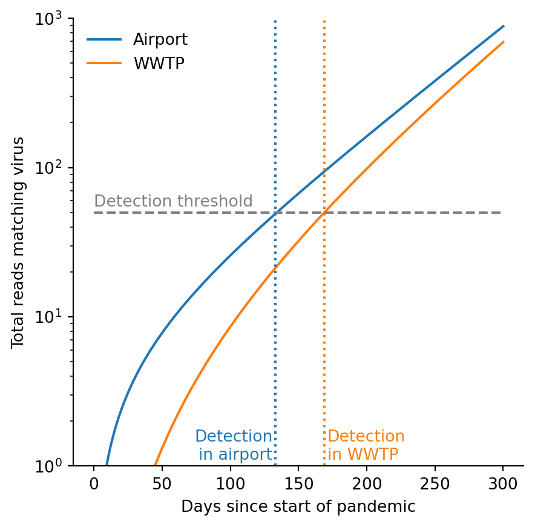
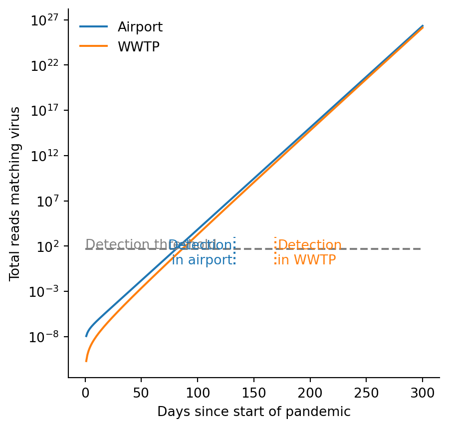

Code
import numpy as np
doubling_time = 2.68
r = np.log(2) / doubling_time
n_g = 8e9
saturation_time = np.log(n_g) / r
print(f"Saturation time: {saturation_time:0.2f} days")Saturation time: 88.16 daysThis is building on Mike’s notes. The objective is to have a very simple deterministic model of an exponentially-growing virus spreading from somewhere else in the world to a monitored city. The main difference from Mike’s notes is that our flight model conserves the number of people who are infected.
Some assumptions:
We’ll use the variable \(P\) to be the absolute prevalence, i.e. the raw number of people infected, and \(p\) to be the relative prevalence, i.e., the fraction of a given population that is infected. The subscript \(l\) refers to the local population of the monitored city and \(nl\) refers to the non-local population. We use the subscript \(g\) to refer to the total. So \(P_{g}\) is the total number of people currently infected.
Parameters:
Our model is a pair of ODEs (dots represent time derivatives):
\[ \dot{P}_{nl} = (r - f_{in}) P_{nl} + f_{out} P_l \]
\[ \dot{P}_{l} = f_{in} P_{nl} + (r - f_{out}) P_l \]
with initial conditions \(P_{nl}(0) = 1\) and \(P_{l}(0) = 0\).
(An aside about the initial conditions. While it’s reasonable to model a virus that starts by infecting one individual, it is not accurate to extend the deterministic model to the earliest stages of the pandemic. In particular, the early stages will be both noisy and superexponential because conditional on not going extinct the prevalence has to grow quickly to get away from the zero bound. In the medium-term – after stochastic effects dominate and before saturation sets in – the prevalence will grow approximately exponentially. You can think of this model as extrapolating that regime backwards in time to an “effective time zero”. One thing to check is whether this causes any problems for the local dynamics.)
Note that our flight model conserves the total prevalence: the rate of infected individuals flying from global to local is exactly equal to the reverse rate. Thus, we have exponential growth of the global prevalence:
\[ P_{g} \equiv P_{nl} + P_{l} \]
\[ \dot{P}_{g} = r P_{g} \]
We have found one eigenvector of the system of ODEs. The other takes on a natural meaning if we make a further assumption about the rates of flights. We assume that the rate of flying to the focal city is proportional to its size. In particular, we set \(N_{nl} f_{in} = N_l f_{out}\). With this assumption, some algebra shows that the second eigenvector is the difference between the non-local and local prevalence:
\[ \Delta p \equiv p_{nl} - p_l \]
\[ \dot{\Delta p} = (r - F) \Delta p \]
where \(F \equiv f_{in} + f_{out}\). Note that if \(N_{l} \ll N_{nl}\) then \(F \approx f_{out}\), the rate at which people fly from the focal city every day.
This equation shows that there are two regimes:
In the slow-growth regime, there’s no intrinsic advantage to monitoring air travelers (aside from whatever sample properties like fewer non-human contributions to the wastewater) because the virus gets established locally before it reaches high prevalence globally. Of course this conclusion depends on our simple model: having a more detailed model of the flight network may suggest that there are particular places it would be good to monitor. Also, stochastic effects may matter a lot in this regime, because it relies on establishment of the virus locally from a small number of introductions.
In the fast-growth regime, there may be a significant advantage to monitoring air travelers if it’s possible to catch the virus while it’s in it’s exponential phase globally. We would need a non-linear model with saturation effects (e.g. Charlie’s) to estimate the advantage if we can’t catch it while it’s growing exponentially.
Charlie estimates that \(F \approx 1 / 300\) (a person flies on average once every 300 days). This paper says that the doubling time of SARS-CoV-2 in the US before mitigation efforts was 2.68 days (\(r = 0.26\)). Thus, for a covid-like spread, we might expect \(r / F \sim 80\). In this section, we consider monitoring for such a pathogen in the fast-growth regime where \(r \gg F\).
Solving our differential equations, we have:
\[ p_g = \frac{1}{N_g} e^{rt} \]
\[ p_l = \frac{1}{N_l} \frac{f_{in}}{F} \left( 1 - e^{-Ft} \right) e^{r t} \approx \frac{1}{N_g} \left( 1 - e^{-Ft} \right) e^{r t} \]
The global population is 8 billion people, so we can get a crude upper bound on the time our model will be valid for by solving for when exponential growth would infect everyone:
import numpy as np
doubling_time = 2.68
r = np.log(2) / doubling_time
n_g = 8e9
saturation_time = np.log(n_g) / r
print(f"Saturation time: {saturation_time:0.2f} days")Saturation time: 88.16 daysThis is several times shorter than the mixing time \(1 / F\), so it’s safe to simplify our equation to:
\[ p_l \approx \frac{1}{N_g} Ft e^{r t} \]
So in short times the ratio \[ \frac{p_l}{p_g} \approx Ft \]
We assume that the cumulative reads are proportional to the time integral of the prevalence:
\[ \int_0^t p_g dt = \frac{1}{rN_g} (e^{rt} - 1) \approx \frac{1}{rN_g} e^{rt} \]
\[ \int_0^t p_l dt = \frac{F}{r^2N_g} \left(e^{rt} (rt - 1) + 1\right) \approx \frac{1}{rN_g} Ft e^{rt} \]
To be continued…
import numpy as np
import matplotlib.pyplot as plt
def integral_global(t, r, n):
return (np.exp(r * t) - 1) / (n * r)
def integral_local(t, r, n, f):
return integral_global(t, r, n) - integral_global(t, r - f, n)rs = [1 / 250, 1 / 800]
fs = [1 / 300, 1 / 300]
n = 10
t_max = 3200
t = np.linspace(1, t_max, t_max)
fig, axes = plt.subplots(1, len(rs), sharey=True)
for r, f, ax in zip(rs, fs, axes):
ax.semilogy(t, integral_global(t, r, n))
ax.semilogy(t, integral_local(t, r, n, f))
axes[0].set_ylim([1, 1e4])
plt.show()
r = 1 / 60
f = 1 / 150
n = 10
t_max = 300
t = np.linspace(1, t_max, t_max)
fig = plt.figure(figsize=(5,5))
ax = fig.add_subplot()
ax.semilogy(t, integral_global(t, r, n), label="Airport")
ax.semilogy(t, integral_local(t, r, n, f), label="WWTP")
ax.legend(frameon=False)
ylim = [1, 1e3]
ax.set_ylim(ylim)
ax.hlines([50], 0, 300, linestyle="dashed", color="grey")
ax.vlines(133, *ylim, linestyle="dotted", color="C0")
ax.vlines(169, *ylim, linestyle="dotted", color="C1")
ax.set_xlabel("Days since start of pandemic")
ax.set_ylabel("Total reads matching virus")
ax.text(0, 55, "Detection threshold", color="grey")
ax.text(131, 1.1, "Detection\nin airport", color="C0", ha="right")
# ax.text(270, 600, "Airport reads", color="C0", ha="right")
ax.text(171, 1.1, "Detection\nin WWTP", color="C1")
# ax.text(215, 100, "WWTP reads", color="C1")
for spine in ['top', 'right']:
ax.spines[spine].set_visible(False)
plt.show()
r = 0.259
f = 1 / 300
n = 1e8
t_max = 300
t = np.linspace(1, t_max, t_max)
fig = plt.figure(figsize=(5,5))
ax = fig.add_subplot()
ax.semilogy(t, integral_global(t, r, n), label="Airport")
ax.semilogy(t, integral_local(t, r, n, f), label="WWTP")
ax.legend(frameon=False)
# ylim = [1, 1e3]
# ax.set_ylim(ylim)
ax.hlines([50], 0, 300, linestyle="dashed", color="grey")
ax.vlines(133, *ylim, linestyle="dotted", color="C0")
ax.vlines(169, *ylim, linestyle="dotted", color="C1")
ax.set_xlabel("Days since start of pandemic")
ax.set_ylabel("Total reads matching virus")
ax.text(0, 55, "Detection threshold", color="grey")
ax.text(131, 1.1, "Detection\nin airport", color="C0", ha="right")
ax.text(171, 1.1, "Detection\nin WWTP", color="C1")
for spine in ['top', 'right']:
ax.spines[spine].set_visible(False)
plt.show()